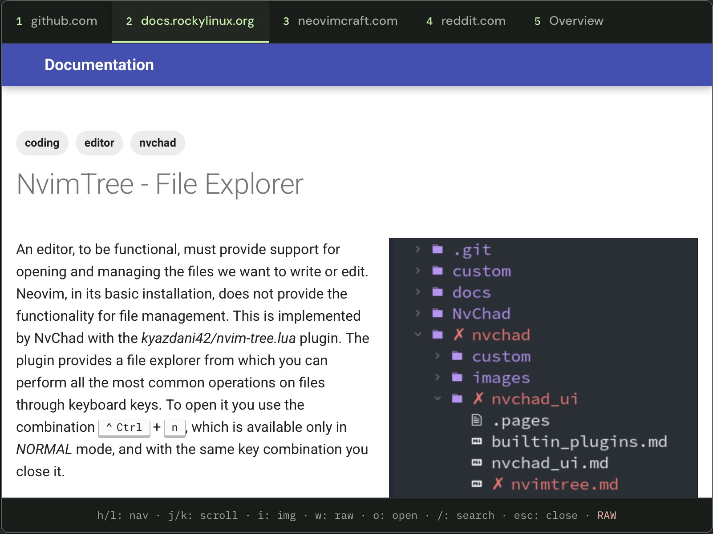
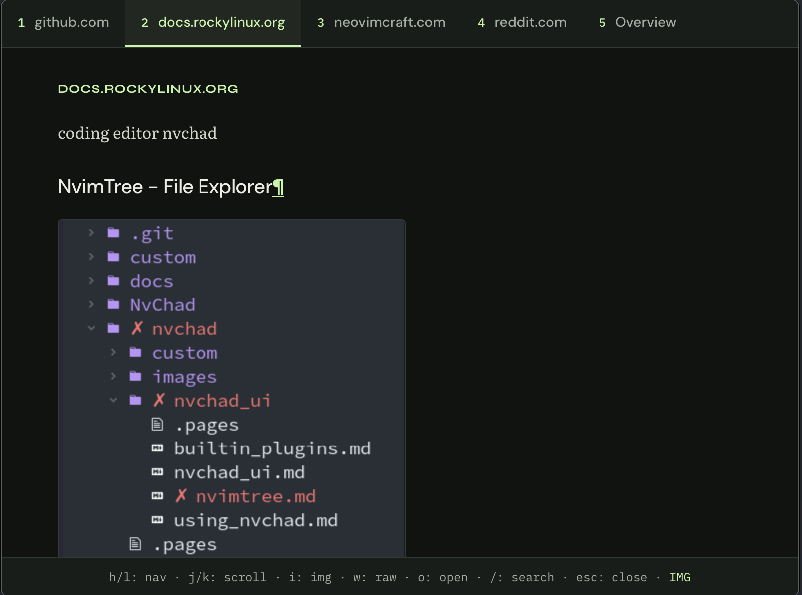
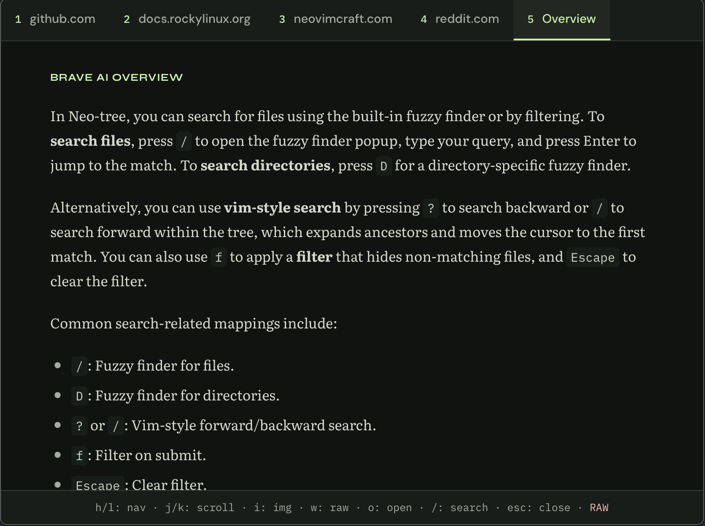

THE ORIGINAL LAYOUT
See the page as a page.
Press w for a static view of the original layout. When you need the full website, o opens it in your browser.

Search the web from any app on your Mac.
Read the results, then get back to your work.
macOS · Apple Silicon · Free & open source
01 / A LITTLE ROOM TO READ
Open Strafe with Option + Space.
Search the web and read the results, right where you are.
Read documentation, essays, and articles in a clean text view. Move through your search results without a growing row of browser tabs.
Text-first, by default.

Keep the diagrams and screenshots that help an explanation click. Press i in the app to bring images into the reader.
The same page. A little more context.

A real page, in both views. Read the original on Rocky Linux
02 / A DIFFERENT PERSPECTIVE
Keep the source in reach.
Choose how you want to read it.
Press w for a static view of the original layout. When you need the full website, o opens it in your browser.

Read a Brave AI overview alongside the source results. Add a separate Brave Answers API key to enable it.

03 / STAY ON THE KEYS
Find the answer, move to the next result,
or return to your work. Your hands can stay put.
MAKE A LITTLE ROOM FOR FOCUS
Free & open source. Bring your Brave Search API key.
Open the DMG and drag Strafe to Applications.
Enter a Brave Search API key ↗ on first launch.
Allow Accessibility access. Press Option + Space from any app.